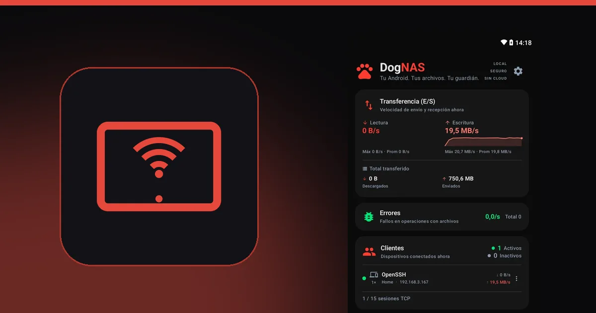

¿Tablet vieja parada? Conviértela en almacenamiento del hogar

Todo el mundo tiene una tablet en el cajón: la de los niños, la que se puso lenta, la que fue reemplazada por un modelo nuevo. Suele tener más almacenamiento que un celular viejo, una pantalla grande y una batería mayor. Todo eso la hace una buena candidata a servidor de archivos de la casa.
Por qué una tablet funciona bien
- Pantalla grande. Dejada en un estante o en un soporte, muestra el panel del servidor (clientes conectados y velocidad de las transferencias) de un vistazo.
- Batería mayor. La batería propia ayuda en cortes breves de energía, y una tablet conectada a la corriente se queda en su lugar sin que nadie la toque.
- Espacio. Muchas tablets tienen ranura para tarjeta SD o aceptan un disco USB, con USB OTG, para ampliar el espacio.
- Ya está parada. Le das una función a un dispositivo que no tiene otra.
Cómo convertir la tablet en servidor
DogNAS funciona en celulares y tablets con Android 7.0 o más reciente.
- Instala DogNAS en la tablet y elige dónde quedan los archivos: memoria, tarjeta SD o disco USB.
- Toca Iniciar.
- Crea un perfil para cada persona de la casa, con PIN y carpetas propias.
- En los celulares, abre DogNAS Client Lite, apunta la cámara al código QR del perfil e ingresa el PIN. En la computadora, usa FileZilla, WinSCP o Cyberduck.


Cuidados con una tablet vieja
- Batería. Si la batería está hinchada, el dispositivo se calienta demasiado o la tapa se levanta, no lo dejes conectado: deja de usarlo y busca servicio técnico. La seguridad va antes que la reutilización.
- Déjala conectada, en un lugar ventilado. Los servidores quedan encendidos mucho tiempo.
- Dependencia del fabricante. Algunos fabricantes limitan las apps en segundo plano para ahorrar batería, así que revisa los requisitos y prueba unos días.
- Solo en la red de casa. El acceso es por el Wi-Fi local. No necesitas abrir puertos en el router.
- Copia independiente. DogNAS guarda los archivos en el almacenamiento que elegiste y no hace copias por su cuenta. Para lo irremplazable, mantén una segunda copia.
Cuánto espacio
En el plan Gratis, DogNAS administra hasta 64 GB, con el perfil Casa y 2 perfiles más, y hasta 3 dispositivos vinculados. Pro es una compra única, sin suscripción, y libera todo el almacenamiento del dispositivo.
Vale la pena
Para la mayoría de los hogares, que solo quieren guardar fotos, videos y documentos, la tablet que ya está parada resuelve sin costo extra. Si necesitas más, mira NAS tradicional o servidor Android, y para el paso a paso, cómo convertir un Android viejo en un servidor de archivos.